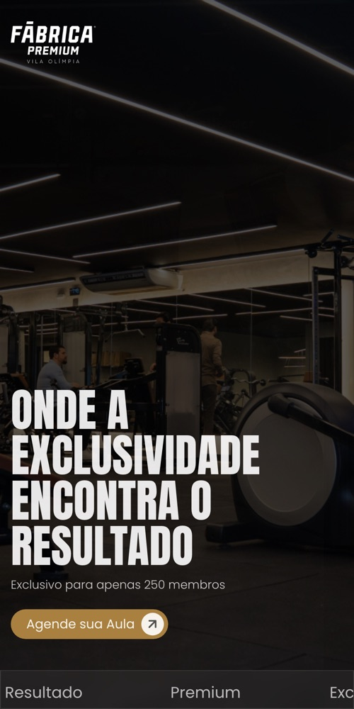
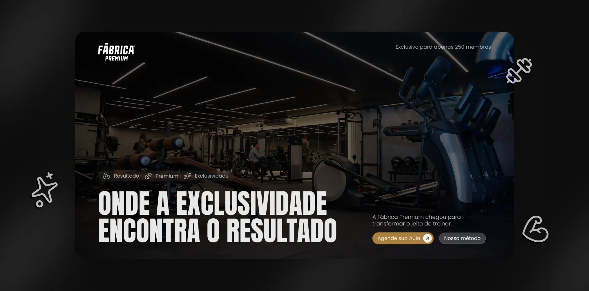

Contato direto com o dev
Acompanhe cada etapa e aprove as alterações falando direto com quem está desenvolvendo o seu site.
Desenvolvemos landing pages e sites institucionais do zero, com código próprio, carregamento rápido e design pensado para transformar visita em contato.
Código que performa. Design que converte. Cada site é desenvolvido do zero, pensado para o seu cliente.
Cases
Nichos e estilos diferentes, da academia ao infoproduto, todos desenvolvidos para trazer cliente.
O que está em jogo
Um site fraco faz você perder cliente sem nem ficar sabendo. Um site bem feito trabalha por você todo dia.
Ele ouve o seu nome, procura no Google e abre o seu site. Se não encontra nada que convença, a conversa nem começa.
Os dois aparecem. Um tem um site moderno que passa seriedade, o outro um site de 2015. Ele escolhe quem parece mais estabelecido.
Mandar o clique para um site genérico faz a pessoa se perder. Uma landing page focada leva direto para o contato.
A pessoa abre, demora para carregar, fica torto na tela, e ela fecha antes de ler a primeira linha.
Um site bem feito vira esse jogo a seu favor, todo dia.
O que desenvolvemos
Nada de modelo pronto que mil empresas usam igual. Cada projeto é desenhado e programado para o seu negócio.
Página única focada em conversão, para campanhas, lançamentos e captação de clientes.
Site completo para apresentar a sua empresa, seus serviços e passar seriedade para quem chega.
Interface criada no Figma com foco em usabilidade, conversão e na identidade da sua marca.
Código limpo e leve, que abre rápido e fica perfeito em qualquer tela, do celular ao computador.
Estrutura organizada para o Google entender o seu site e quem procura o seu serviço te encontrar.
WhatsApp, formulários, CRM, Pixel, Google Analytics e Tag Manager ligados desde o primeiro dia.
Projetos em destaque
Empresas que confiaram na STUTZ para ter um site à altura do que entregam.

Como funciona
Um processo transparente e eficiente, do primeiro contato ao projeto publicado.
Entendemos o seu negócio, seus objetivos e o que o site precisa entregar para gerar resultado.
Desenhamos a interface completa com foco em usabilidade, conversão e na identidade da sua marca.
Programamos com código limpo, rápido e seguro, com animações fluidas e as integrações que o projeto pede.
Você valida tudo em um ambiente de testes. Depois da aprovação, publicamos no seu domínio oficial.
Do primeiro rascunho ao deploy: cada entrega é pensada para ser rápida, bonita e funcional.
Site que converte
Cada site já sai pronto para receber visitas do Google, do Instagram ou de anúncios, e levar a pessoa direto para o contato.
chega pelo Google, Instagram ou anúncio
apresenta, convence e tira as dúvidas
onde a conversa começa
e um negócio que cresce
Por que a STUTZ
Acompanhe cada etapa e aprove as alterações falando direto com quem está desenvolvendo o seu site.
Depois do lançamento, seguimos ao seu lado com hospedagem, ajustes e melhorias contínuas.
Feedbacks
Mensagens de clientes depois que o site foi para o ar.
Exemplo: troque pelo feedback real que o cliente mandou.
★★★★★
Exemplo: troque pelo feedback real que o cliente mandou.
Exemplo: troque pelo feedback real que o cliente mandou.
Assunto do e-mail
Exemplo: troque pelo feedback real que o cliente mandou.
Exemplo: troque pelo feedback real que o cliente mandou.
Exemplo: troque pelo feedback real que o cliente mandou.
★★★★★
Exemplo: troque pelo feedback real que o cliente mandou.
Exemplo: troque pelo feedback real que o cliente mandou.
Perguntas diretas
O prazo é definido no orçamento, de acordo com o escopo. Landing pages são as entregas mais rápidas; sites institucionais seguem um cronograma por etapas, combinado com você desde o início.
O domínio é registrado no seu nome (CPF/CNPJ). Nós entramos apenas como contato técnico para configurar tudo com segurança.
Sim. Todos os projetos são desenvolvidos com a mentalidade "mobile first", garantindo uma experiência tão rápida e fluida no celular quanto no computador.
A landing page é uma página única, focada em uma ação: captar contato, vender um produto ou divulgar um lançamento. O site institucional tem várias páginas e apresenta a empresa como um todo. No orçamento indicamos o que faz mais sentido para o seu objetivo.
Sim. Oferecemos planos de hospedagem, manutenção e evolução para manter o seu site sempre atualizado, seguro e no ar.